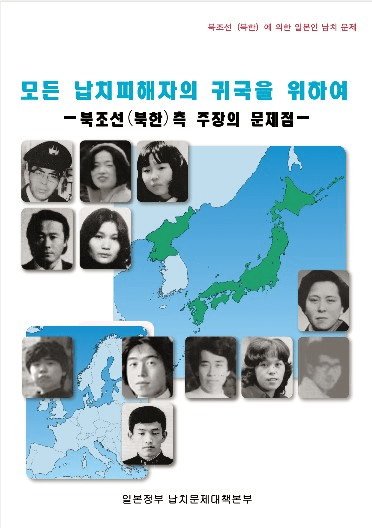
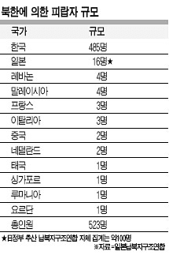

뭐 애지간한 사회 문제 사건은 다 건드려보고 그려보는
일본에서도 사실상 거의 안건드리는 소재가 있는데
바로 북한의 일본인 납치 사건이다

이게 뭐냐면
북한은 1970년대부터 1980년대에 걸쳐 공작원의 일본 침투 및 신분 도용,
북한 공작원들에게 일본어와 일본 문화를 교육할 교사 확보,
그리고 남한 침투용 공작원 양성 등을 목적으로 수많은 일본인들을 납치했음
대략 피랍자만 공식적으로 확인된게 16~17명인데
일본 본토 뿐만 아니라
유럽에서도 일본인들을 납치하고 그랬음
말이 16~17명이지
민간 단체 조사나 의심되는 사람수로는 400~800 찍는다는 조사도 있다
UN 조사위원회의 추정으론 최소 100명 이상이라고 하기도 하고..
아베 총리가 정치계열 전국구 스타가 된 계기도 이 납치사건에 강경하게 대응을 하면서 부터였음
일단 이중에 제일 유명한 사람은 요코타 메구미로
아마 관련 전공이나 관심이 있던 사람들은 한번쯤 들어봤을꺼다
여튼 이런 소재는 서브컬쳐에서 잘 안다루어 지는데 몇가지 이유가 있다
일본 만화계와 출판 업계는 정치적 논란에 휘말리는 것을 극도로 기피하기 때문이다
납치 문제는 피해자 가족들이 아직 살아있고,
한일 관계, 조총련, 일본 내 좌우 갈등, 북미 관계 등 현실 정치와 직결되어있기도 하고
아무리 공익 목적로 다루거나 픽션을 섞더라도 작가가 우익이라거나 좌익이라는 식의 딱지가 붙어 불매운동이 터지기 쉬움
편집부 입장에서는 리스크를 감수할 이유가 전혀 없는 소재라 볼수 있겠다
또한 만화는 기본적으로 독자에게 카타르시스나 재미를 주어야 하는데
납치 문제는 국가가 국민을 지키지 못했고, 수십 년이 지난 지금까지도 해결하지 못한 무력감의 상징임
픽션으로 일본 히어로가 북한에 침투해 납치 피해자를 통쾌하게 구출한다! 같은 스토리를 쓰면
현실과의 괴리감이 너무 커서 조롱거리가 되거나 유가족에게 상처가 되기도 하고....
그렇기 때문에 일본에서 이 주제는 철저히 공익 목적의 다큐멘터리 만화로만 제작되고 있다
위 짤의 만화는 메구미(めぐみ)라는
만화인데 요코타 메구미의 부모님이 직접 원작을 맡아 실화를 바탕으로 그려진 다큐멘터리 만화임
상업 만화 잡지가 아닌 일본 정부(납치문제대책본부)가 기획,홍보용으로 제작했으며,
무료 애니메이션으로도 만들어져 각급 학교나 지자체에서 교육용으로 배포되고 있다
여튼간에 북괴 새끼들은 진짜
전세계적으로 온갖 문제만 일으키는 개새끼들이다
댓글
댓글 보관 대기 중입니다. 원문 응답 오류가 있으면 다음 실행에서 다시 수집합니다.